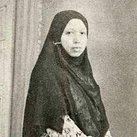

Klik Untuk Kembali Ke Profil Saya
tokohpanutan

Biografi Singkat
- Lahir = 26 Oktober 1900, Nagari Bukit Surungan, Padang Panjang, Hindia Belanda
- Wafat = 26 Februari 1969, Padang Panjang, Sumatra Barat, Indonesia
- Orang Tua = M.Yunus & Masyumi
- Dikenal karna seorang reformator pendidikan islam dan pejuang kemerdekaan Indonesia.Ia merupakan pendiri Diniyyah Putri dan sewaktu RNI ia memelopori pembentukan unit TKR.Rahmah sempat belajar di Diniyah School yang dipimpin abangnya:Zainuddin Labay El Yunusy.Tidak puas dengan sistem koedukasi yang mencampurkan pelajar putra dan putri dalam satu kelas, Rahmah secara inisiatif menemui beberapa ulama Minangkabau untuk mendalami agama, hal tidak lazim bagi seorang perempuan pada awal abad ke-20 di Minangkabau. Selain itu, ia mempelajari berbagai ilmu praktis secara privat yang kelak ia ajarkan kepada murid-muridnya. Dengan dukungan abangnya, ia merintis Diniyah Putri pada 1 November 1923 yang tercatat sebagai sekolah agama Islam khusus perempuan pertama di Indonesia.Sewaktu pendudukan Jepang di Sumatera Barat, Rahmah memimpin Haha No Kai di Padang Panjang untuk membantu perwira Giyugun. Pada masa perang kemerdekaan, ia memelopori berdirinya Tentara Keamanan Rakyat (TKR) di Padang Panjang dan mengerahkan muridnya melawan penjajah sesuai kesanggupan mereka walaupun hanya menyediakan makanan dan obat-obatan. Pada 7 Januari 1949, ia ditangkap oleh Belanda dan ditahan di rumah tahanan perempuan Padang Panjang, kemudian dipindahkan ke Padang.Dalam pemilu 1955, Rahmah terpilih sebagai anggota DPR mewakili Masyumi, tetapi tidak pernah lagi menghadiri sidang setelah ikut bergerilya mendukung Pemerintahan Revolusioner Republik Indonesia (PRRI).Keberadaan Diniyah Putri kelak menginspirasi Universitas Al-Azhar membuka Kulliyatul Banat, fakultas yang dikhususkan untuk perempuan. Dari Universitas Al-Azhar, Rahmah mendapat gelar kehormatan "Syekhah"—yang belum pernah diberikan sebelumnya kepada perempuan manapun di dunia—sewaktu ia berkunjung ke Mesir pada 1957, setelah dua tahun sebelumnya Imam Besar Al-Azhar Abdurrahman Taj berkunjung ke Diniyah Putri. Di Indonesia, pemerintah menganugerahkannya tanda kehormatan Bintang Mahaputra Adipradana secara anumerta pada 13 Agustus 2013.